Fidelity card
Ogni 5 poke, la sesta è in omaggio.
Dal 2022 · la prima pokeria di Benevento
Salmone e avocado, ma anche salsiccia rossa di Castelpoto e mortadella di suino nero. Componi la tua bowl scegliendo tra più di 150 ingredienti e la ritiri in via Pietà, a due passi dall'università.
4,8 su Google · 1.253 recensioni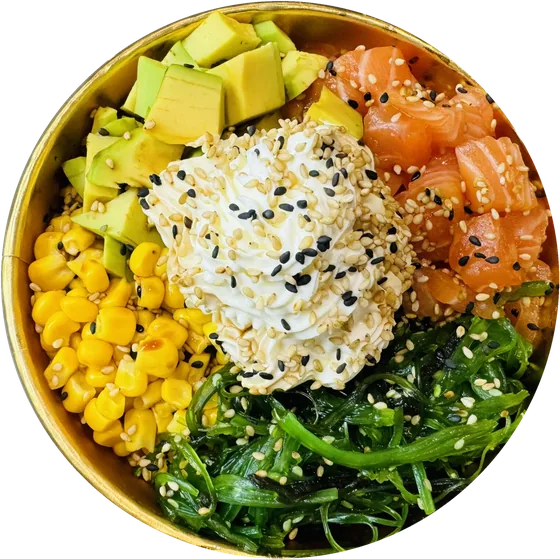
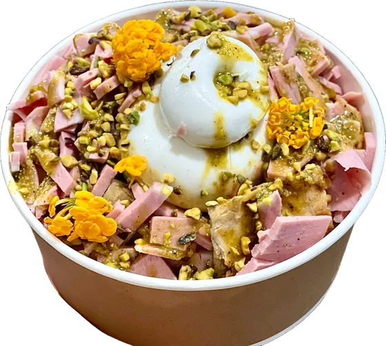
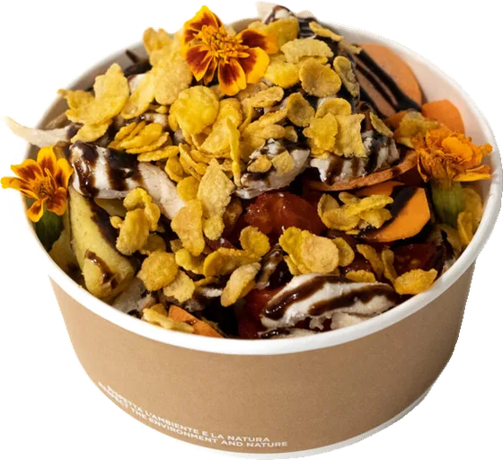
Il menù da spuntare, ora sul telefono
Scegli il formato, poi base, ingredienti, proteine, salse e crispy. Il prezzo si aggiorna mentre scegli; le aggiunte oltre il formato costano come al banco.
Le foto sono nostre, i piatti pure. Scorri.
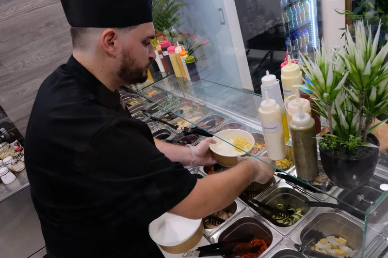
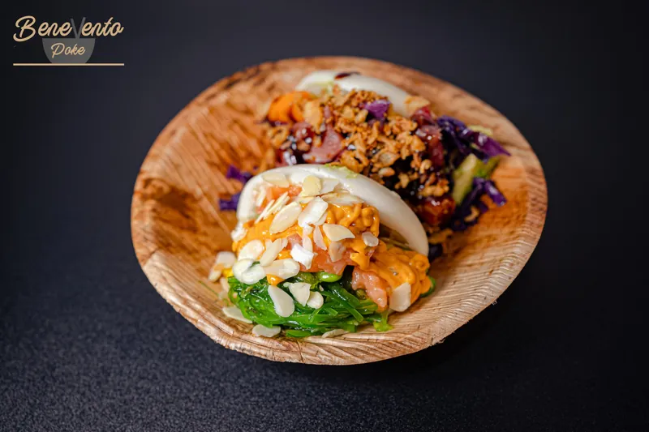
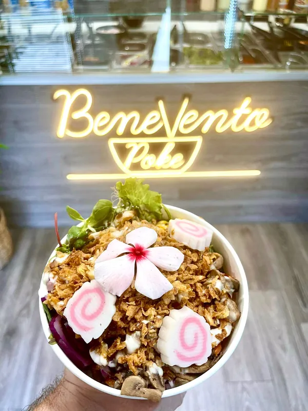
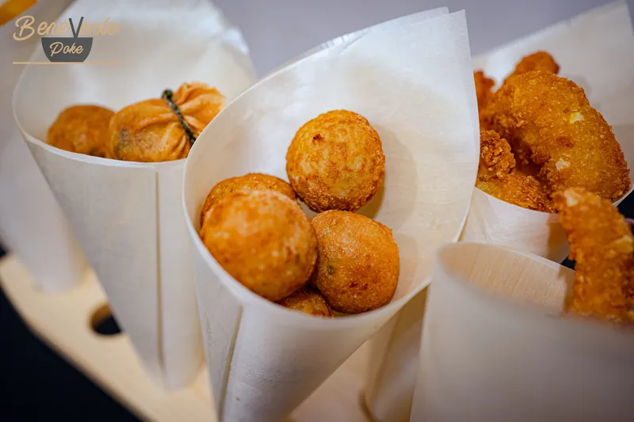
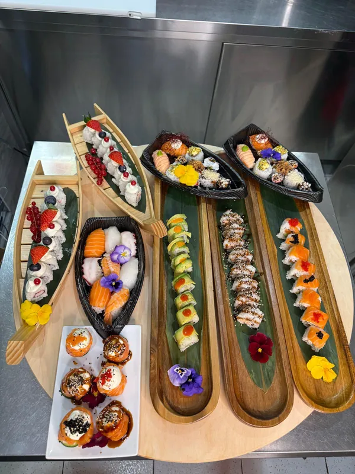
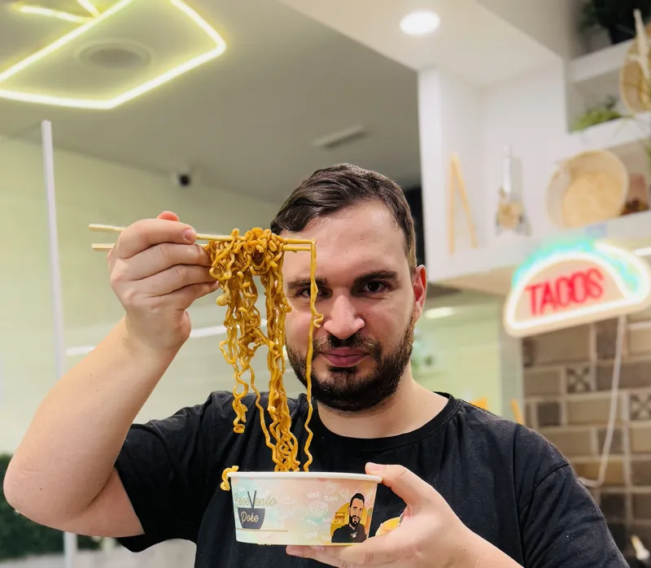
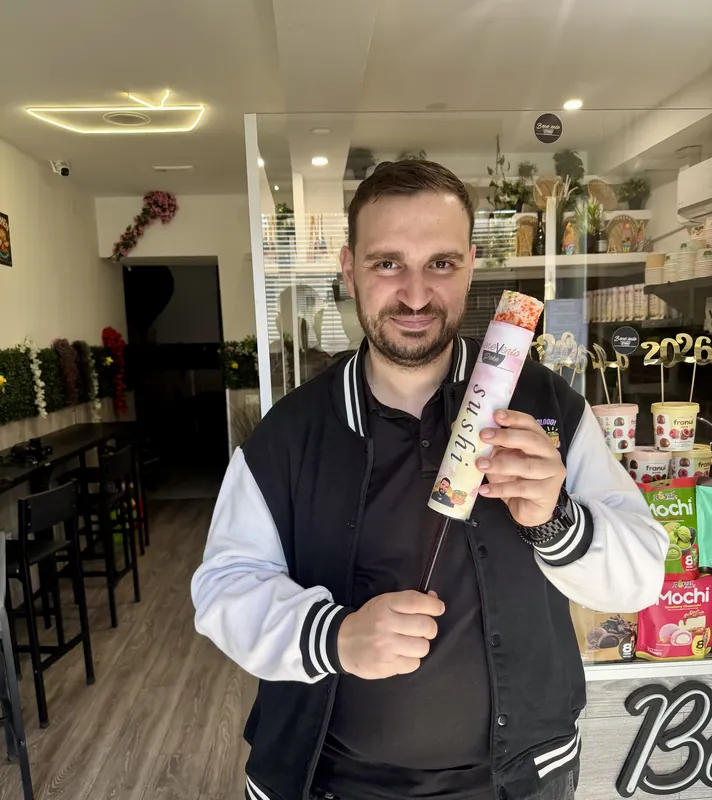
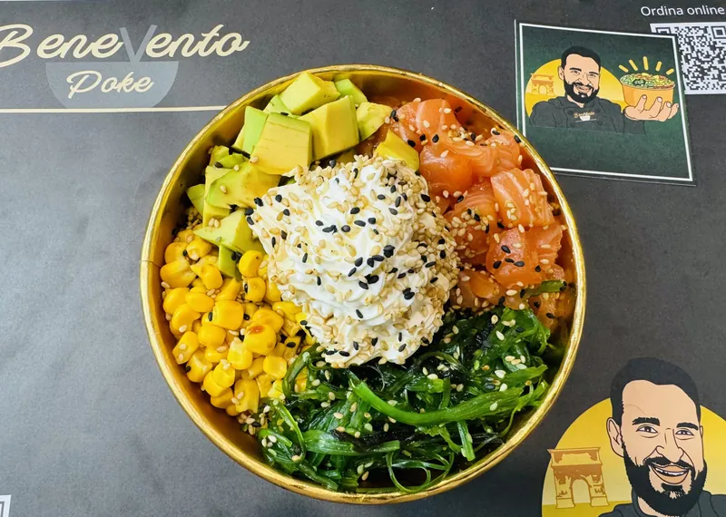
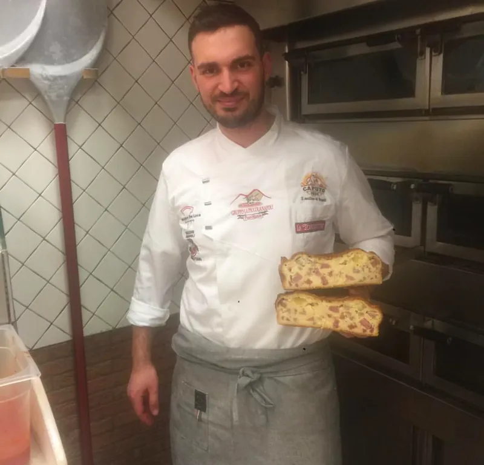
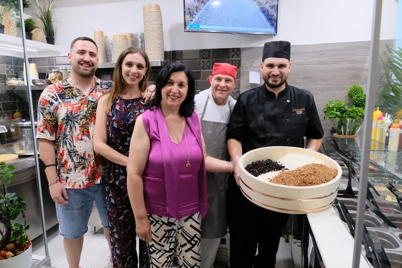
Chi siamo
I genitori, Giuseppe e Maria Antonietta, da più di dieci anni mandano avanti il forno a legna di Pizza Più. Paolo è tornato a Benevento dopo anni in Valle Caudina e nel 2022 ha aperto qui accanto la prima pokeria della città, nel rione Pietà che ha nel cuore.
L'idea è semplice: perché non mettere il Sannio dentro una poke bowl? Così è nata la Local Poke, con la salsiccia rossa di Castelpoto e i salumi della fattoria Muccio, presidio Slow Food, accanto a salmone, riso e alghe.
Sul nuovo packaging ci sono l'Arco di Traiano, Santa Sofia, il Teatro Romano e il Bue Apis.
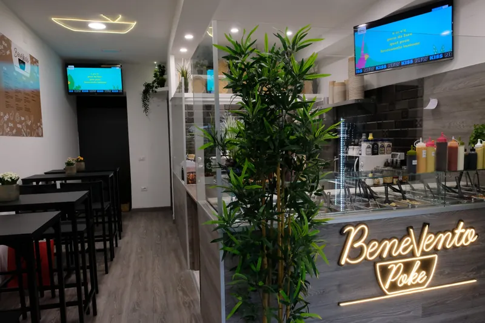
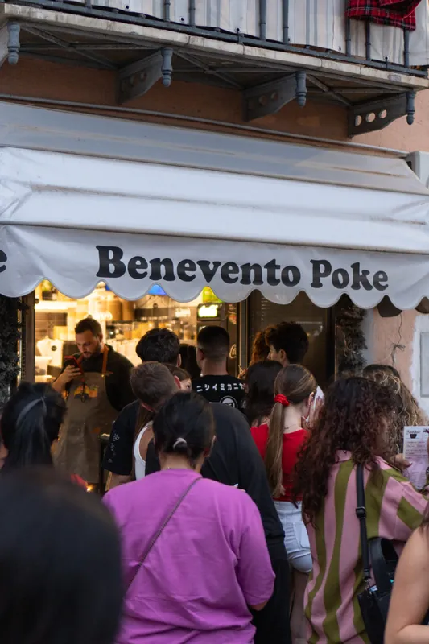
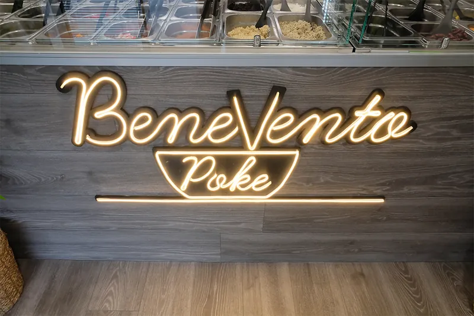
Per chi torna
Ogni 5 poke, la sesta è in omaggio.
Fotografa la tua poke, pubblica una storia taggando @beneventopoke e seguici: mostrala in cassa.
5 € di sconto su una spesa di almeno 15 €. Perfetta per la pausa pranzo.
Siamo vicini all'università. Studenti maggiorenni: tre domande in video e una Small è in regalo. Scrivici per prenotarti.
«Poke deliziosa e personale gentile e preparato nel consigliare gli accostamenti.»
«Poke buonissima, prodotti eccezionali, super consigliato.»
«Un menu molto ampio sia nel cibo che nelle bevande. Prezzi adeguati.»
Dove e orari
A Benevento, a due passi dall'Università (sede SEA). Sala interna climatizzata e garden all'aperto; i cani di piccola taglia sono benvenuti.
A domicilio ci trovi anche su Glovo, Deliveroo e Just Eat.
| Lunedì | 12:00–15:00 · 18:30–23:30 |
|---|---|
| Martedì | 12:00–15:00 · 18:30–23:30 |
| Mercoledì | 12:00–15:00 · 18:30–23:30 |
| Giovedì | 12:00–15:00 · 18:30–23:30 |
| Venerdì | 12:00–15:00 · 18:30–23:30 |
| Sabato | 12:00–15:30 · 18:30–24:00 |
| Domenica | 18:30–23:30 |